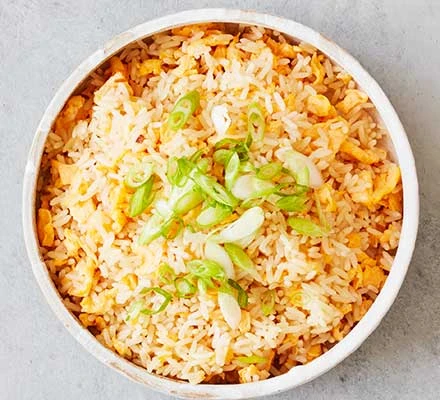

Ori's Kitchen
Hello fellas, for too long we have wasted money eating out, ordering food home and wasting money for no reason.
Today we will change that, by using basic ingredients and simple techniques to cook tasty food for cheap.
Basic techniques and tips for saving money:
- Buy in bulk
- Buying dry and long lasting ingredients in bulk will overall make your budget fit more.
- Don't throw away anything
- What most people would consider trash or scraps are your tresure!
onions and garlic skins can be used to make onion garlic seasoning, the onion skin can even be trown in water together with carrot peels, leeks and what not in order to make a tasty and vegetables stock.
a day old rice is perfect for some Egg fried rice - Batch cooking
- A green leafy vegetable
- Buy chicken fish and meat whole
- By getting the ingredients whole and butchering them yourself you will get more meat for your money.
Also the same with the vegetable leftovers the bones and "ugly" parts of the animels are pricless for stoke, a healthy and nutritinal base for many other dishes
Lets get cooking
By: Ori Uziahu
recepice List:
- Chicken Soup
- A delicius and nutritinal home made chicken soup perfect for those winter evenings
- Egg fried rice
- An egg fried rice, a very vercitle dish
- Rice burrito
 awesome burritos for making in bulk and freazing
awesome burritos for making in bulk and freazing